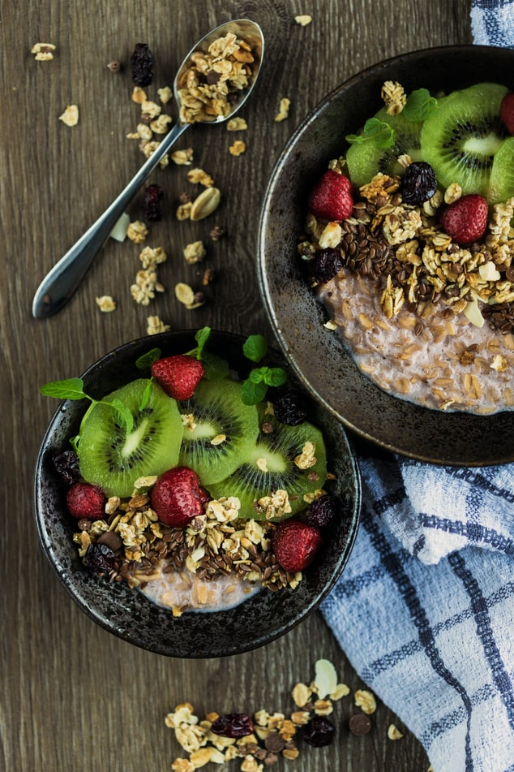

My name is PHANI, i am Vegan and would like to talk about Vegan diet
About Vegan Diet
Veganism is both the practice of abstaining from the use of animal products, particularly in diet, and an associated philosophy that rejects the commodity status of animals.A follower of either the diet or the philosophy is known as a vegan. Distinctions are sometimes made between several categories of veganism.
Dietary vegans (or strict vegetarians) refrain from consuming animal products, not only meat but also eggs, dairy products and other animal-derived substances. The term ethical vegan is often applied to those who not only follow a vegan diet but extend the philosophy into other areas of their lives, and oppose the use of animals for any purpose. Another term is environmental veganism, which refers to the avoidance of animal products on the premise that the harvesting or industrial farming of animals is environmentally damaging and unsustainable.
